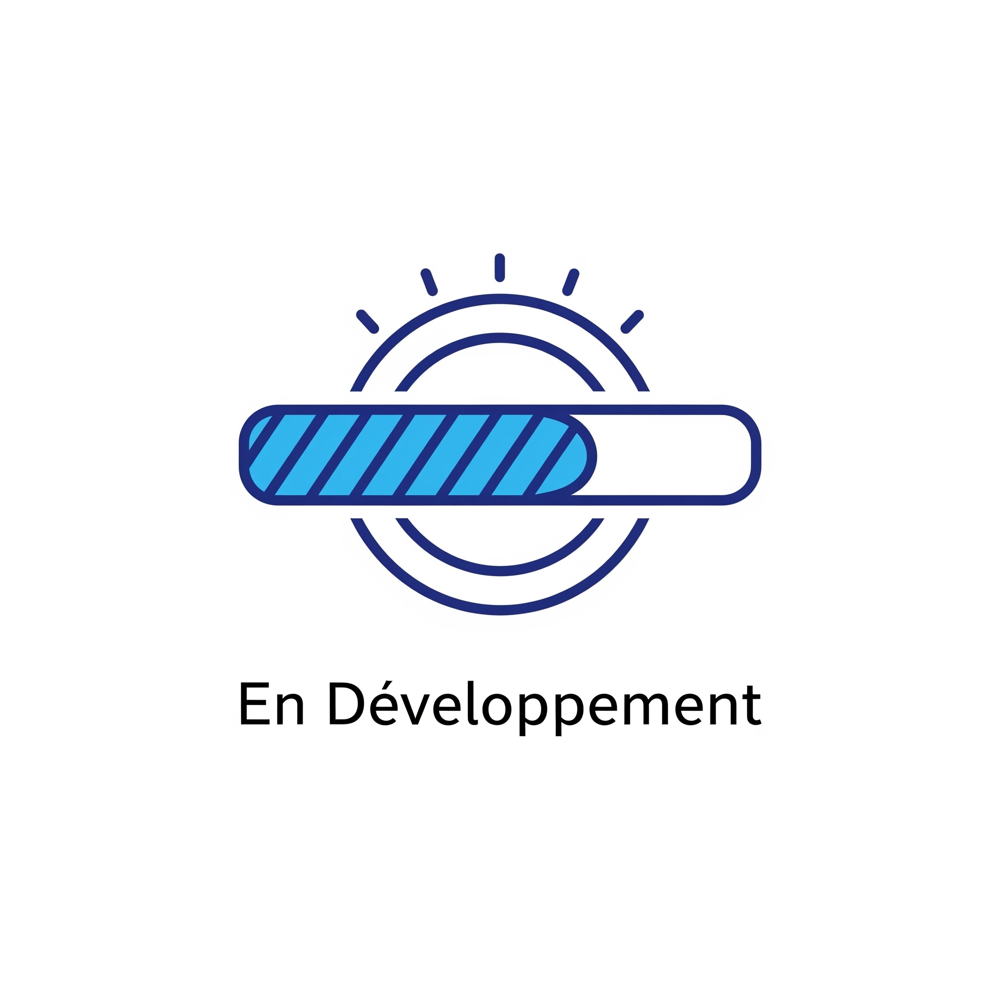

Préparez-vous à l'avenir de l'IA et de l'automatisation
Nous construisons XOV, une plateforme révolutionnaire d'agents IA et d'automatisation intelligente. Grâce à un MCP (Multi-Agent Coordination Protocol) innovant, vos processus atteindront une efficacité et une autonomie sans précédent.
Restez Informé & Accès AnticipéChez XOV, nous imaginons un monde où les tâches complexes sont gérées par des agents IA autonomes, collaborant en parfaite synergie. Notre objectif est de vous offrir la puissance de l'Intelligence Artificielle pour libérer le potentiel de votre entreprise et optimiser chaque aspect de vos opérations grâce à une automatisation de nouvelle génération.
Nous développons un écosystème robuste où chaque agent IA a son rôle, et où le MCP garantit une orchestration fluide et intelligente de vos processus.
Voici un aperçu de ce que XOV vous apportera :
Développez et déployez des agents IA spécialisés pour des fonctions précises.
Orchestrez des équipes d'agents IA avec notre MCP pour des workflows complexes.
Automatisez des processus métier end-to-end avec une logique IA décisionnelle.
Nos systèmes d'IA apprendront et s'amélioreront constamment pour une performance accrue.
Anticipez les tendances et prenez des décisions éclairées grâce à des capacités d'analyse IA avancées.
Visualisez les performances de vos agents et de votre automatisation en temps réel.
Nous travaillons activement pour vous offrir la meilleure expérience possible.
Construction des fondations de la plateforme, du moteur d'agents et du MCP.
Tests internes rigoureux et intégration des premiers modules d'automatisation.
Invitation des premiers utilisateurs et partenaires pour des retours d'expérience précieux.
La plateforme XOV sera publiquement disponible pour transformer vos processus.
Ne manquez aucune étape de notre développement. Soyez les premiers informés et accédez à notre programme Early Access.